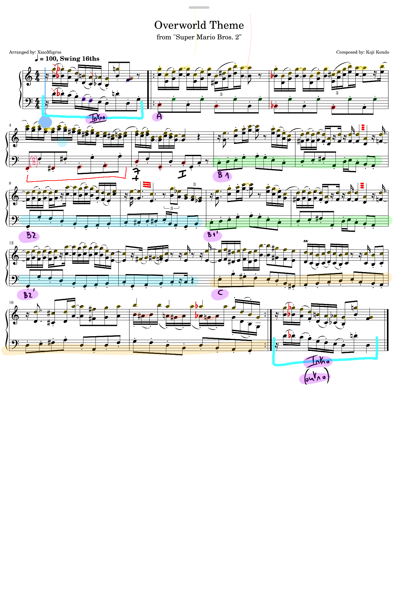

Essai Analytique
L'Analyse Exhaustive du Thème Overworld de Super Mario Bros. 2
Histoire, Philosophie Ludomusicale et Interprétation Pianistique
Recherche Indépendante
Publié dans la section Études Nintendo & Musique 8-bit
L'étude des musiques de jeux vidéo, formellement reconnue aujourd'hui sous l'appellation de ludomusicologie, a franchi au cours des dernières décennies le seuil de la simple nostalgie culturelle pour s'imposer comme un champ de recherche académique d'une grande rigueur. Au cœur de cette discipline naissante se trouve l'œuvre fondatrice de Koji Kondo, compositeur emblématique de la société Nintendo, dont les créations sonores ont redéfini de manière indélébile la relation intime entre l'environnement acoustique, l'interactivité motrice du joueur et l'identité visuelle d'une œuvre vidéoludique. Parmi son répertoire exceptionnellement vaste, le thème principal, communément désigné sous le terme d'Overworld, du jeu Super Mario Bros. 2 (sorti en 1988 sur le marché occidental) occupe une position paradigmatique et singulière.
Cette pièce musicale ne se contente aucunement d'accompagner de manière passive une expérience de divertissement numérique ; elle se dresse comme le point de convergence de trajectoires historiques complexes. Ces trajectoires englobent les mutations corporatives et stratégiques de Nintendo, la genèse accidentelle et paradoxale du jeu lui-même, tout en fusionnant des héritages stylistiques d'une incroyable diversité tels que le ragtime, le jazz, le swing, la musique de vaudeville et les rythmes afro-caribéens. L'étude qui suit propose de déconstruire cette œuvre à travers un prisme analytique exhaustif, explorant en profondeur l'histoire croisée de sa création, la philosophie compositionnelle de Koji Kondo face aux limitations drastiques de l'architecture 8-bit, la structure musicologique et harmonique précise de la partition, son héritage florissant dans les orchestrations jazz modernes, et enfin, les défis biomécaniques et esthétiques inhérents à son interprétation pianistique la plus fidèle.
I. De la Carte Hanafuda à l'Écran : L'Histoire Croisée de Nintendo et du Processus Créatif
Pour saisir pleinement l'essence de la musique de Super Mario Bros. 2, il s'avère indispensable de la replacer dans la vaste fresque des bouleversements industriels et créatifs qui ont forgé l'identité de Nintendo. La chronologie de l'entreprise révèle une culture de l'adaptabilité et de l'expérimentation continue qui se reflète de manière intrinsèque dans sa production ludique et, par extension, musicale.
L'Évolution de Nintendo : Du Jeu Traditionnel au Divertissement Électronique
L'histoire de Nintendo, institution basée à Kyoto, s'enracine profondément dans l'ère Meiji. En 1889, l'artisan Fusajiro Yamauchi fonde « Yamauchi Nintendo », une modeste entreprise dédiée à la fabrication de cartes à jouer traditionnelles japonaises appelées hanafuda. Ces cartes, délicatement illustrées de motifs floraux pour contourner les lois gouvernementales strictes interdisant les jeux de cartes numérotées associés aux jeux d'argent clandestins, ont rapidement dominé le marché nippon, trouvant même une clientèle assidue dans les casinos gérés par les yakuzas. Cette genèse est d'une importance capitale : dès ses origines les plus lointaines, Nintendo a lié le concept de divertissement à une esthétique visuelle prononcée et à une tactilité matérielle.
Sous la direction visionnaire de Hiroshi Yamauchi, qui succède à Sekiryo Kaneda en 1949, l'entreprise amorce une phase de diversification radicale, s'essayant à divers marchés avant de trouver sa véritable vocation dans l'industrie du jouet ludique (avec des créations ingénieuses comme l'Ultra Hand en 1966) puis, inéluctablement, dans le divertissement électronique naissant des années 1970. Après le krach dévastateur du jeu vidéo nord-américain en 1983, Nintendo identifie une faille de marché béante et introduit avec audace sa console japonaise Famicom (lancée sur son sol natal en 1983) sur le marché américain en 1985 sous l'appellation de Nintendo Entertainment System (NES).
| Période Historique | Événement Clé et Évolution Stratégique de Nintendo |
|---|---|
| 1889 – 1932 | Fondation par Fusajiro Yamauchi. Production de cartes hanafuda sous l'ère Meiji, marquant l'origine de la société dans le divertissement visuel et tactile. |
| 1969 – 1978 | Transition vers les jouets mécaniques (Ultra Hand) puis vers les premiers jeux vidéo d'arcade et la série de consoles dédiées Color TV-Game. |
| 1979 – 1987 | Ère de l'innovation électronique portable avec les Game & Watch, succès mondial en arcade avec Donkey Kong (1981), et lancement triomphal de la Famicom/NES. |
| 1988 – 1994 | Domination du marché avec le Game Boy, la Super Nintendo Entertainment System (SNES), et consolidation des franchises majeures. |
Ce lancement international est porté par un titre révolutionnaire conçu par le tandem créatif composé de Shigeru Miyamoto et Takashi Tezuka : Super Mario Bros.. Le succès phénoménal, critique et commercial de ce jeu, qui s'écoulera à des dizaines de millions d'exemplaires, crée instantanément le besoin impérieux d'une suite. Toutefois, l'histoire de ce second volet est marquée par une bifurcation inattendue, engendrant l'un des paradoxes de développement les plus étudiés du média.
Le Paradoxe Doki Doki Panic et la Genèse de Super Mario Bros. 2
Le processus de création de Super Mario Bros. 2 illustre de manière éloquente la façon dont les contraintes géopolitiques commerciales et les sensibilités culturelles façonnent l'art vidéoludique. En 1986, Nintendo sort une suite directe au premier jeu, destinée exclusivement au marché japonais via le périphérique Famicom Disk System. Conçue principalement par Miyamoto et Tezuka avec le même moteur graphique et les mêmes assets que l'original, cette version est caractérisée par une difficulté d'une exigence extrême, parfois qualifiée de punitive et sadique, s'adressant explicitement aux « super joueurs » ayant maîtrisé le premier opus.
Lorsque les exécutifs de Nintendo of America évaluent le titre pour une localisation, la branche américaine le juge beaucoup trop frustrant et structurellement trop similaire à son prédécesseur. La direction craint légitimement qu'un tel niveau de difficulté ne rebute le public occidental naissant et ne détruise la popularité de la franchise fraîchement établie sur le sol américain. Face à ce refus catégorique, Nintendo du Japon doit concevoir une alternative viable dans des délais extrêmement restreints. La solution se trouve dans un autre projet, initialement développé par Kensuke Tanabe sous la supervision de Shigeru Miyamoto : Yume Kōjō: Doki Doki Panic (traduisible par « Usine à Rêves : Panique Palpitante »).
Ce jeu, sorti en juillet 1987 sur le Famicom Disk System, avait d'abord été conçu comme un prototype expérimental de jeu à défilement vertical centré sur l'action coopérative de soulever des blocs ou de se jeter mutuellement. L'aspect purement vertical s'avérant laborieux à transformer en un jeu complet, Miyamoto suggéra d'y intégrer des éléments de défilement horizontal traditionnels, le rapprochant inévitablement de la grammaire ludique de Mario. De manière surprenante, Doki Doki Panic était le fruit d'un partenariat commercial de licence avec Fuji Television pour promouvoir le grand festival technologique et médiatique « Yume Kōjō '87 ». Le jeu mettait en scène une famille de personnages d'inspiration arabe (Imajin, Mama, Lina, et Papa) qui servaient de mascottes officielles à l'événement.
Pour créer le Super Mario Bros. 2 destiné au marché occidental (qui sortira triomphalement le 9 octobre 1988), Nintendo entreprend un méticuleux travail de re-skinning (modification esthétique) de Doki Doki Panic. La famille d'origine arabe est remplacée par les figures emblématiques de Mario, Luigi, la Princesse Peach et Toad, reprenant les attributs physiques (sauts flottants, puissance de levage) des personnages originaux. Certains éléments graphiques, les animations et, crucialement, une partie de la musique, sont altérés pour correspondre à l'univers du Royaume Champignon.
Ce contexte de développement est fondamental pour l'analyse musicale et esthétique. L'ironie profonde de l'histoire du développement vidéo-ludique veut que les architectes historiques de Mario, à savoir Shigeru Miyamoto (producteur) et le compositeur Koji Kondo, aient été en réalité beaucoup plus intimement impliqués dans la conception originale de Doki Doki Panic que dans celle du Super Mario Bros. 2 japonais original (qui sera connu plus tard en Occident sous le nom de The Lost Levels). Ainsi, bien que née d'une licence télévisuelle externe, la partition musicale de ce jeu contenait déjà organiquement l'essence rythmique, la philosophie de conception et la « touche Mario », préparant le terrain fertile pour l'un des thèmes les plus emblématiques et mémorables de l'ère du 8-bit.
II. L'Évolution Stylistique et l'Émergence des Musiques Fondatrices au Piano
Afin d'appréhender la richesse harmonique et rythmique de la composition de Koji Kondo, il est impératif d'explorer les traditions musicales nord-américaines de la fin du XIXe et du début du XXe siècle. Le thème Overworld s'inscrit dans une lignée directe de styles pianistiques afro-américains, où le piano n'est pas simplement un instrument mélodique, mais un orchestre autonome et complet.
Le Ragtime : La Genèse de la Syncope
Le ragtime, popularisé à l'aube du XXe siècle par des figures tutélaires telles que Scott Joplin (célèbre pour son Maple Leaf Rag publié en 1899), constitue la fondation rythmique indéniable de l'esthétique de Super Mario. Musicalement, le ragtime se caractérise par une tension inhérente entre une main gauche rigoureusement ancrée sur les temps forts (jouant des basses fondamentales ou des octaves sur les premier et troisième temps, et des accords sur les deuxième et quatrième temps) et une main droite déchaînant une mélodie hautement syncopée, c'est-à-dire qui accentue les temps faibles ou les contre-temps.
Cette syncope, qui donne au style son nom (le temps « déchiqueté » ou ragged time), instaure un balancement propulsif qui invite irrépressiblement au mouvement physique. La recherche en ludomusicologie souligne que le ragtime, par son essence même, est une musique conçue pour la danse et l'animation kinesthésique, ce qui en fait un candidat idéal pour accompagner un avatar numérique dont l'interaction principale est le saut. Bien que les compositeurs ultérieurs aient adapté le ragtime pour des ensembles, ses pionniers (Joplin, Thomas Turpin, Eubie Blake, James Scott) étaient tous des pianistes virtuoses, consolidant l'idée que cette musique trouve sa réalisation la plus pure et la plus complète sur le clavier soliste.
Le Piano Stride et le Boogie-Woogie : L'Émancipation de la Main Gauche
Du ragtime a émergé, dans les années 1920 à Harlem, le piano stride (ou Harlem stride). Des innovateurs comme James P. Johnson, Thomas « Fats » Waller et Willie « The Lion » Smith ont étendu les concepts du ragtime en augmentant le tempo, en élargissant les intervalles à la main gauche (d'où le terme stride, signifiant enjamber) et en introduisant des éléments précoces d'improvisation jazzistique. Le stride exige une technique pianistique d'une difficulté redoutable, la main gauche devant accomplir des bonds rapides et précis sur plus d'un octave de distance à des tempos effrénés, tandis que la main droite exécute des arpèges complexes, des tierces parallèles et des voicings denses.
Parallèlement, le boogie-woogie s'est développé comme un style centré sur le blues, caractérisé par des figures de basse obstinées (ostinato) à la main gauche, souvent construites sur des motifs de croches en cascade ou d'octaves brisées. Cette sensation de mouvement continu (momentum) inhérente au boogie-woogie et au stride a profondément influencé l'approche des concepteurs sonores de l'ère 8-bit, qui cherchaient à maintenir l'énergie du joueur sans interruption. L'Overworld de Super Mario Bros. 2 puise abondamment dans cette énergie, utilisant le canal de basse pour émuler une « walking bass » inébranlable qui rappelle le balancement inexorable des pianistes de Harlem.
Le Swing et la Transition vers les Petits Ensembles
Le swing, qui a dominé l'ère des big bands des années 1930 et 1940, a institutionnalisé l'usage des accords de septième, des neuvièmes et d'une section rythmique dédiée (contrebasse, batterie, guitare, piano) chargée de maintenir le groove. Bien que Kondo dispose de ressources sonores infiniment plus restreintes que Count Basie ou Duke Ellington, il compense ce manque matériel par une compréhension structurelle du swing. En étudiant l'architecture harmonique de ces musiques fondatrices, Kondo a pu extraire leur sève fonctionnelle : les accords de dominante secondaires, les résolutions par cycle des quintes et l'utilisation de notes de passage chromatiques pour adoucir les mouvements de basse. Ainsi, la richesse du piano stride et du swing se retrouve distillée dans le microcosme de la puce sonore de la NES.
III. La Puce 2A03 et la Philosophie Ludomusicale de Koji Kondo
L'environnement technologique des années 1980 imposait des limites architecturales strictes qui ont forcé les compositeurs de musique de jeux vidéo à développer une ingéniosité hors pair. Koji Kondo, recruté par Nintendo en 1984 à la sortie de l'université, n'était pas seulement un compositeur, mais un véritable concepteur sonore. Sa formation initiale sur l'orgue électronique Yamaha Electone et son exploration précoce du synthétiseur analogique Yamaha CS-30 lui ont conféré une maîtrise exceptionnelle du séquençage et de la conception de timbres, compétences cruciales pour dompter le matériel de la Famicom.
Le Défi Hardware : L'Architecture de la NES
La création musicale sur la Nintendo Entertainment System était irrémédiablement conditionnée par les capacités restreintes de la puce sonore Ricoh 2A03 (également connue sous le nom de Programmable Sound Generator). Le système ne disposait que de cinq canaux audio distincts, dont seulement trois étaient véritablement dédiés aux fréquences tonales.
| Canal de la Puce 2A03 | Caractéristiques Techniques et Utilisation Musicale Typique par Koji Kondo |
|---|---|
| Onde Carrée 1 (Pulse 1) | Canal mélodique principal. Possibilité de moduler la largeur d'impulsion pour changer le timbre (son nasillard type hautbois ou rond type clarinette). Contrôle du volume et de l'enveloppe. |
| Onde Carrée 2 (Pulse 2) | Canal harmonique secondaire. Souvent couplé au Pulse 1 pour créer des harmonies à deux voix, des effets de délai (écho), ou l'illusion d'accords complexes. |
| Onde Triangulaire (Triangle) | Utilisé presque exclusivement pour la basse. Ce canal possède un volume fixe, sans contrôle d'enveloppe direct, ce qui produit un son continu et profond, idéal pour les lignes de "walking bass" du jazz. |
| Bruit Blanc (Noise) | Générateur de nombres pseudo-aléatoires créant de la statique. Indispensable pour émuler les percussions (caisses claires, charlestons, cymbales) via la manipulation de l'enveloppe. |
| DPCM (Delta Modulation) | Canal d'échantillonnage de très basse résolution. Utilisé sporadiquement pour de courts samples vocaux ou des percussions spécifiques (toms, timbales), mais très gourmand en mémoire cartouche. |
L'impossibilité physique de jouer plus de trois notes tonales simultanément obligeait les compositeurs à repenser totalement la densité de l'orchestration. Pour contourner cette limite drastique de polyphonie, Kondo utilisait des techniques d'écriture d'une sophistication redoutable. Il déployait des arpèges extrêmement rapides (arpeggio effect) où l'alternance fulgurante des notes trompe l'oreille humaine, créant l'illusion auditive d'un accord plein joué simultanément. De plus, Kondo maîtrisait l'art de la syncope non seulement rythmiquement, mais aussi techniquement : en décalant les notes sur des subdivisions infimes, il pouvait alterner rapidement les ondes entre les différents canaux, donnant l'illusion d'un ensemble beaucoup plus vaste qu'il ne l'était en réalité, créant un son distinctement « funky » et faussement dense.
Cette contrainte technologique a mené à l'utilisation systématique des shell voicings (voicings en coquille). Empruntée aux grands maîtres du piano jazz comme Art Tatum et Bill Evans, cette technique consiste à omettre les notes redondantes d'un accord (généralement la quinte, et parfois la fondamentale si elle est assurée par la basse) pour ne conserver que les notes définissant sa couleur harmonique, à savoir la tierce et la septième. Dans l'Overworld de SMB2, Kondo emploie ces réductions harmoniques magistralement, impliquant des accords de neuvième ou des dominantes altérées avec seulement deux ondes carrées et une onde triangulaire.
L'Esthétique de l'Embodiment Musical et l'Identité du Gameplay
L'approche de Koji Kondo dépasse toutefois largement la simple prouesse technique de contournement matériel ; elle s'ancre dans une philosophie profonde et avant-gardiste de la relation entre l'avatar, l'espace virtuel et le joueur. Contrairement aux pratiques de la musique de film linéaire (où la musique dicte principalement une émotion psychologique telle que la peur, la tristesse ou l'héroïsme), Kondo a conçu la musique de la série Super Mario pour refléter viscéralement l'expérience physique, tactile et cinétique du gameplay. Suivant les directives philosophiques de Shigeru Miyamoto, qui exigeait un design audio synchronisé avec l'action et doté de « substance », Kondo a développé ce que la littérature académique nomme une esthétique de l'incarnation musicale (embodiment-of-music aesthetic).
Dans cette vision ludomusicale révolutionnaire, le rythme et la mélodie n'accompagnent pas le mouvement de Mario, ils l'anticipent, l'imitent et le provoquent. Le thème Overworld de Super Mario Bros. 2 est méticuleusement conçu avec un balancement et une syncope qui induisent physiquement chez le joueur le désir de courir, de sauter et de se déplacer avec fluidité. Comme Kondo l'a lui-même précisé lors d'interviews, son rythme exerce une véritable « poussée » (push) motrice sur l'audience. L'identité de la musique n'est donc en aucun cas dissociable de l'interactivité ludique ; elle agit comme une interface invisible, un pont neurologique qui relie la motricité humaine à la physique numérique programmée dans le code du jeu. Cette synergie parfaite confère à la partition un caractère d'intemporalité absolue, car elle s'adresse directement au sens proprioceptif du rythme inhérent à la condition humaine.
IV. Influences Croisées : Calypso, Rythmes Latins et Vaudeville dans l'Univers de Subcon
Le génie singulier de Koji Kondo réside dans sa capacité alchimique à synthétiser des traditions musicales extrêmement disparates au sein du cadre contraint du 8-bit. L'analyse stylistique du thème Overworld de Super Mario Bros. 2 révèle un syncrétisme musical fascinant, puisant sans complexe dans le répertoire de la diaspora africaine, de la musique latine, et du théâtre de divertissement comique nord-américain. Ce mélange hétéroclite s'aligne parfaitement avec l'univers onirique et absurde du jeu.
Le Caractère Afro-Caribéen : Calypso et Latin Bounce
Kondo a publiquement déclaré son affection profonde pour la musique latine, le jazz de la côte ouest, et le travail de fusion instrumentale de musiciens japonais tels que le saxophoniste Sadao Watanabe et le groupe T-Square. L'Overworld de Super Mario Bros. 2 incorpore un fort sentiment caribéen et latino, souvent qualifié par les analystes de Calypso ou de Mambo.
Ce caractère spécifique se manifeste non seulement par l'utilisation astucieuse du canal de bruit blanc pour simuler des percussions latines (shakers, congas, timbales virtuelles), mais aussi par l'adoption rythmique d'un « rebond latin » (Latin bounce). Contrairement au swing traditionnel des clubs de jazz, qui repose sur une division ternaire très relâchée du temps (le fameux chabada), le rebond latin de Kondo est structurellement plus direct, droit (straight eighths) et orienté vers une accroche pop immédiate. Les syncopes s'effectuent par l'anticipation vigoureuse des temps forts, permettant au joueur d'appréhender le rythme instantanément, un élément crucial pour la précision des sauts millimétrés requis par le level design.
L'Esthétique du Vaudeville et du Slapstick
Outre ses racines caribéennes et jazzistiques, la pièce comporte de multiples caractéristiques indéniablement propres au vaudeville, au music-hall et à l'esthétique du slapstick des dessins animés des années 1930. Le monde de Super Mario Bros. 2 se déroule dans le royaume de Subcon, un univers de rêve peuplé d'ennemis masqués (les Mask-Gates, Shy Guys) et de mécaniques de jeu burlesques, notamment l'action de déraciner des légumes géants pour les projeter sur les adversaires.
L'humour musical de Kondo s'exprime ici à travers des sauts intervalliques abrupts, des arpèges espiègles, et une orchestration qui, selon certains ludomusicologues, évoque tour à tour un banjo roulant, une contrebasse comique et un piano de saloon désaccordé. Cette tonalité de dessin animé décalée, infusée d'influences bluegrass et de dixieland, confère au jeu une ambiance folâtrement théâtrale. Le choix de cette musique enjouée contraste radicalement avec l'approche parfois anxiogène des thèmes souterrains, démontrant la volonté de Kondo de cartographier musicalement les espaces virtuels.
V. Analyse Musicologique et Harmonique Exhaustive du Thème Overworld
Thème Original (8-bit)
Composition de Koji Kondo (Famicom / NES)
Pour comprendre méticuleusement comment cette complexité stylistique et philosophique est articulée sur le plan strictement technique, une analyse harmonique rigoureuse de la partition est incontournable. L'architecture de la pièce démontre une sophistication intellectuelle bien supérieure à l'image réductrice d'une simple mélodie enfantine. Le thème est ancré dans la tonalité de Do majeur (C major), bien que cette structure tonale soit constamment défiée et enrichie d'emprunts modaux et de chromatismes audacieux.
Structure Formelle de l'Œuvre
Le thème Overworld est un objet musical prolongé qui fonctionne selon le principe de la boucle infinie, structuré en quatre sections distinctes dont le déroulement maintient un intérêt cognitif constant pour le joueur.
| Section de l'Œuvre | Mesures (mm.) | Analyse Structurelle et Centrage Tonal |
|---|---|---|
| Introduction | mm. 1-4 | Instauration immédiate de la tension dramatique avec le maintien de l'accord de dominante (Sol majeur / G), créant l'anticipation du départ du niveau. |
| Section A | mm. 5-20 | Période de 16 mesures (souvent décrite comme une phrase étendue) centrée sur la tonique Do (C). C'est la section harmoniquement la plus aventureuse et novatrice de l'œuvre. |
| Section B | mm. 21-52 | Double période parallèle, également centrée sur Do (C), adoptant un rythme harmonique beaucoup plus stable et itératif, offrant un contraste avec la Section A. |
| Section C | mm. 53-68 | Deux phrases conclusives employant un cycle des quintes pour ramener inexorablement l'harmonie vers la dominante, préparant le bouclage parfait (looping). |
Décorticage de la Section A : Conduite des Voix et Néo-Riemannianisme
La Section A est sans l'ombre d'un doute le passage le plus fascinant pour les théoriciens de la musique analytique. Elle commence de manière rassurante sur l'accord de tonique (Do majeur), mais dévie quasi immédiatement en utilisant une technique de conduite des voix extrêmement parcimonieuse (parsimonious voice leading) qui défie les attentes diatoniques simples.
La progression d'accords s'articule ainsi de manière séquentielle : C → Eb+ (Mib augmenté) → gm (Sol mineur) → A7 (La septième de dominante) → F (Fa majeur).
La mécanique contrapuntique derrière cette évolution chromatique complexe est dictée par la ligne de basse. La basse s'ouvre sur une quinte à vide Do-Sol (C-G). Tandis que le Sol est maintenu fixement en tant que note pédale ou pivot (servant de point d'ancrage psychoacoustique), la note inférieure de la basse descend par demi-tons à chaque changement d'accord. Parallèlement à ce mouvement souterrain, la voix de soprano (la mélodie principale) suit ce mouvement chromatique descendant, passant subtilement de Mi à Do dièse (E to C#). Ce contrepoint d'une extrême rigueur confère une logique auditive implacable à une progression d'accords qui, isolée sur le papier, semblerait totalement étrangère et dissonante dans le cadre de la tonalité de Do majeur.
L'arrivée majestueuse sur le Fa majeur depuis le La septième (A7) peut s'analyser pertinemment à travers le prisme des théories transformationnelles (notamment la théorie néo-riemannienne), où un accord majeur se transforme via un mouvement spécifique des voix, illustrant une richesse chromatique inouïe pour un simple jeu 8-bit. La phrase se poursuit logiquement par un retour à Do majeur, qui se transforme à son tour en La majeur (une transformation RP dans la terminologie riemannienne), amorçant un cycle des quintes descendant (D7 → G7 → C) pour conclure magistralement la section.
Sections B et C : Stabilité Fonctionnelle et Mouvement Cyclique
La Section B ralentit délibérément le rythme harmonique, offrant une pause auditive bienveillante au joueur après les excursions chromatiques intenses de la section précédente. Elle repose sur une progression itérative qui est le pilier fondamental de la musique populaire, du jazz et de la tin pan alley : I → V/V → V7 → I (Do majeur, suivi de Ré majeur agissant comme dominante de la dominante, glissant vers Sol septième, pour résoudre sur Do majeur). Cette séquence classique, répétée à l'identique deux fois, ancre fermement la tonalité et invite le joueur à un moment de fluidité et de prévisibilité dans le gameplay, s'appuyant sur l'harmonie fonctionnelle de dominante typique du vocabulaire jazz-pop.
La Section C vient rompre cette prévisibilité en introduisant une nouvelle surprise harmonique de taille. L'accord de tonique Do majeur subit une transformation chromatique soudaine LP (Leading-tone exchange / Parallel) pour devenir un éclatant accord de Mi majeur (E major). À partir de ce Mi majeur inattendu, Kondo initie un cycle des quintes systématique (E → A → D → G) qui crée une tension directionnelle irrésistible. Cette cascade harmonique est résolue par le retour triomphal à l'accord de dominante originel (Sol), qui agit comme un tremplin propulsant le joueur de nouveau au début de la Section A.
L'analyse spectrale de la ligne de basse révèle également un trait d'écriture brillant : sur chaque temps fort (downbeat), la ligne de basse joue systématiquement la fondamentale de l'accord, un principe directement emprunté aux techniques de « walking basslines » des contrebassistes de jazz, ce qui clarifie l'harmonie sous-jacente malgré l'absence d'accords pleins. Ces temps forts sont très souvent approchés par des notes de passage chromatiques ou diatoniques placées sur les levées (upbeats), ce qui adoucit les sauts intervalliques et génère le fameux « drive » rythmique caractéristique du morceau. Enfin, les arpèges exécutés à grande vitesse et les altérations mélodiques (comme le jeu d'alternance entre le Fa naturel et le Fa dièse dans les variations de la section B) teintent les harmonies de riches couleurs modales et de qualités de septième de dominante, insérant clandestinement une maturité compositionnelle sous l'apparence d'une ritournelle insouciante.
VI. De la Console au Big Band : L'Héritage Jazz et les Orchestrations Modernes
L'élégance structurelle et la profondeur harmonique des compositions de Koji Kondo ont naturellement attiré l'attention érudite des musiciens et arrangeurs de jazz contemporains. À notre époque, la musique de jeu vidéo ne se contente plus d'être reproduite par des orchestres symphoniques à cordes ; elle est désormais étudiée et traitée comme un corpus légitime de standards de jazz, sujet à l'improvisation libre et au réarrangement complexe.
L'Impact Culturel et Musical du The 8-Bit Big Band
L'exemple le plus probant et retentissant de cette transition stylistique est sans conteste le travail de l'orchestre « The 8-Bit Big Band », un ensemble prodigieux dirigé par les arrangeurs Charlie Rosen et Jake Silverman. Formé d'un orchestre de studio massif réunissant près de 60 musiciens de haut vol basés à New York, ce projet traite la musique de jeu vidéo historique avec la même révérence, la même rigueur académique et la même créativité que les partitions légendaires de Broadway ou les compositions du Great American Songbook de Cole Porter ou George Gershwin. Leur approche artistique a été validée institutionnellement de la plus haute des manières, couronnée par un Grammy Award prestigieux en 2022 pour le Meilleur Arrangement Instrumental, cimentant ce croisement des genres dans l'histoire de la musique.
Dans leur album événement Press Start!, l'arrangement somptueux du thème Overworld de Super Mario Bros. 2 démontre l'incroyable malléabilité du matériel source de Koji Kondo. Puisque Kondo était contraint d'utiliser des shell voicings minimalistes à cause de la limite stricte des trois canaux tonaux de la NES, de vastes espaces harmoniques ont été laissés acoustiquement vacants de manière inhérente lors de la conception originale. Les arrangeurs de jazz modernes exploitent cette rareté délibérée comme un terrain de jeu fertile pour appliquer des techniques de réharmonisation avancées.
Techniques d'Arrangement et d'Expansion du Vocabulaire Jazz
La réharmonisation de l'Overworld par le 8-Bit Big Band implique l'ajout sophistiqué d'extensions harmoniques supérieures (neuvièmes, onzièmes, treizièmes altérées) et l'utilisation habile de substitutions tritoniques pour densifier les cadences. L'orchestration luxuriante intègre des figures d'accompagnement idiomatiques du jazz (backing figures) aux pupitres des saxophones et des trombones, des sections étendues de solos improvisés, et de titanesques « shout choruses » où l'intégralité de la section des cuivres expose la mélodie de Kondo avec une intensité dramatique et un volume sonique maximal.
Ce processus créatif révèle aux musicologues que la composition originale 8-bit n'est pas une simple mélodie rigide, mais fonctionne comme une véritable « carte conceptuelle » (conceptual map) d'une flexibilité inouïe. Le rythme calypso/latin suggéré originellement se traduit à la perfection lorsqu'il est assumé par la section rythmique étoffée du big band. La basse triangulaire synthétique, statique et froide, est transcendée lorsqu'elle est remplacée par la chaleur boisée d'une contrebasse organique exécutant le walking bass ; le bruit blanc compressé de la NES prend vie lorsqu'il est interprété par une batterie de jazz acoustique complète, rehaussée par un arsenal de percussions latines (congas, bongos, timbales) qui exaltent le groove afro-cubain. Cet héritage éclatant confirme avec acuité les déclarations de Kondo lui-même, qui a toujours considéré le jazz, la fusion et les rythmes latins non pas comme des genres exclusifs, mais comme occupant un même continuum esthétique interconnecté.
VII. Guide Pratique et Esthétique de l'Interprétation au Piano

Interprétation Pianistique
Performance au piano soliste (Stride et Voicings en coquille)
Interpréter l'Overworld de Super Mario Bros. 2 au piano soliste, de manière à la fois historiquement fidèle au jeu original et artistiquement digne d'une performance de concert, représente un défi biomécanique et intellectuel redoutable. Le pianiste ne joue pas simplement un morceau ; il doit assumer simultanément le rôle des ondes carrées polyphoniques (mélodie et harmonie interne), de l'onde triangulaire (basse continue implacable) et, dans l'esprit de son phrasé, du canal de bruit blanc de percussion.
La Maîtrise Architecturale de la Main Gauche : Stride et Drop and Bounce
Le fondement absolu de toute interprétation réussie et propulsive de cette pièce repose sur la main gauche, qui exige une virtuosité technique directement héritée des maîtres du piano stride de Harlem et du boogie-woogie des années folles. La main gauche doit maintenir un mouvement d'horlogerie perpétuel et infaillible. Dans l'application stricte de la technique du stride, le pianiste déploie un motif où la basse fondamentale de l'accord (ou la dixième) est frappée avec autorité sur les temps forts (temps 1 et 3 de la mesure en 4/4), suivie d'un bond fulgurant pour plaquer un accord compact positionné dans le registre ténor ou médium du clavier sur les temps faibles (temps 2 et 4).
La distance physique considérable de ces sauts requiert non seulement une mémoire musculaire et spatiale d'une précision chirurgicale, mais aussi l'application rigoureuse d'une détente musculaire (la technique du drop and bounce, ou chute et rebond du poignet) pour éviter la fatigue et la tétanie des tendons à des tempos élevés. En effet, le tempo d'origine, nécessaire pour capturer l'esprit frénétique et joyeux du jeu, se situe généralement autour de 130 à 150 BPM. La régularité métronomique inébranlable de la main gauche est non négociable dans cette discipline ; elle agit comme l'ancrage gravitationnel du morceau, un pivot autour duquel la main droite peut virevolter avec syncope, vélocité et espièglerie sans jamais que le tempo global de l'édifice ne fluctue.
L'Équilibrisme de la Main Droite : Voicings en Coquille et Conduite des Voix
À la main droite, le pianiste est confronté à la gestion d'une mélodie véloce ornée d'accords constants. En raison de la vitesse d'exécution vertigineuse exigée par la fidélité à l'arrangement 8-bit originel, une réduction harmonique intelligente est souvent indispensable pour le jeu soliste en direct (live), sous peine de rendre l'exécution physiquement impossible ou musicalement brouillonne.
C'est ici que l'étude des « shell voicings » (voicings en coquille) s'avère providentielle. Plutôt que de saturer l'espace harmonique en tentant de jouer des accords complets de quatre ou cinq notes, l'interprète lucide doit privilégier les notes structurelles, à savoir les tierces et les septièmes placées sous la note mélodique, omettant allègrement la quinte juste et souvent la fondamentale (cette dernière étant déjà puissamment affirmée par les bonds de la main gauche). Les chromatismes retors et les modulations internes rapides — comme l'exige le passage sinueux de la Section A (C → Eb+ → gm → A7 → F) décrit dans l'analyse harmonique — nécessitent un doigté pensé à l'avance et d'une grande agilité. L'objectif est de faire ressortir avec limpidité la conduite des voix (voice leading) à l'intérieur même du tissu harmonique, tout en évitant d'étouffer la brillance de la note de chant (la ligne de soprano) qui doit dominer le mix acoustique du piano.
Articulation Numérique, Pédalisation et Caractère Rythmique
L'esthétique si particulière et l'illusion de la polyphonie 8-bit de la puce sonore de la NES proviennent en grande partie de la nature fondamentalement staccato et abruptes des impulsions électroniques carrées. Par conséquent, la transposition au piano nécessite une approche spécifique : l'utilisation de la pédale forte (pédale de sustain) doit être d'une parcimonie extrême, voire totalement proscrite dans les sections les plus rythmiques et denses du morceau. Un jeu excessivement lié (legato) gommerait inévitablement l'aspect percussif, sec et précis inhérent à la composition originelle. Il convient de favoriser un jeu staccato digital perlé, net, incisif et rebondissant, reproduisant avec les marteaux du piano l'attaque immédiate des générateurs d'ondes.
Le traitement rythmique soulève la dernière grande question d'interprétation stylistique : faut-il aborder cette partition avec un « swing » jazzistique (ternaire) ou la jouer « straight » (binaire)? Si l'harmonie riche en septièmes de dominante suggère le répertoire jazz, la volonté avérée de Kondo penchait davantage vers l'énergie d'un « rebond latin » (Latin bounce) ou d'un Mambo pop. L'interprétation la plus fidèle à l'intention du compositeur et au dynamisme du jeu vidéo évitera donc le balancement tertiaire paresseux d'un shuffle blues, pour privilégier un jeu en croches droites (straight eighths) mais rendues vivantes par des syncopes hautement accentuées sur les contre-temps. C'est très précisément ce décalage minutieux des accents dynamiques qui crée l'élan cinétique et imite avec brio l'effet de pesanteur, d'apesanteur et l'action de saut qui définit ontologiquement l'avatar de Mario. En fin de compte, le caractère global de l'interprétation doit rester lumineux, léger et imprégné de l'esprit burlesque du vaudeville, tout en maintenant sous la surface la rigueur martiale de l'exigence technique pianistique.